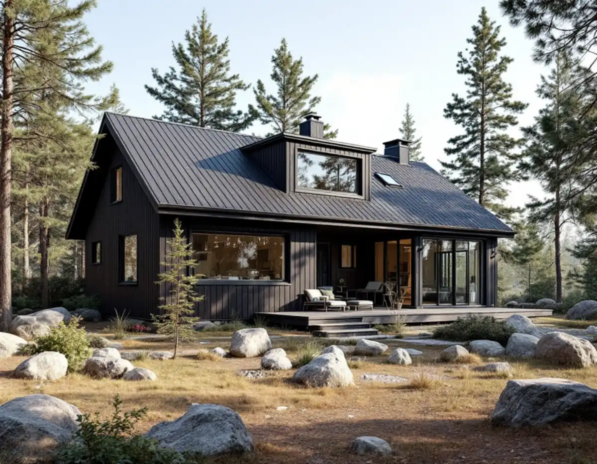
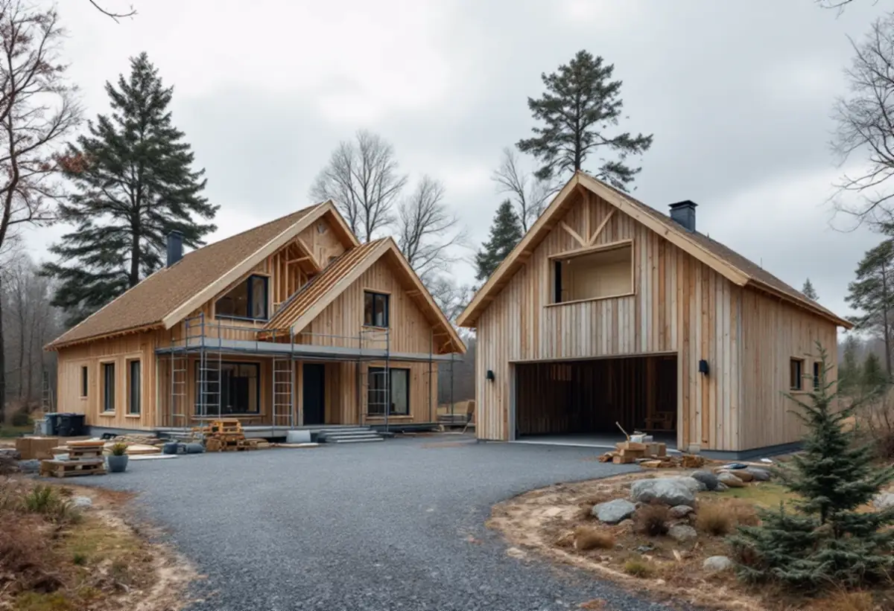
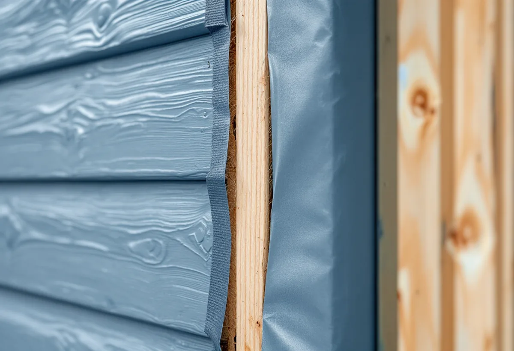

Platsbesök
Huset, tidigare tillbyggnader, avstånd och marknivåer.
Ett uterum, en takkupa, en påbyggnad eller ett förråd som byggs ihop med huset – Haninge kommun räknar allt det som tillbyggnader. Vad som kräver bygglov och vilka handlingar som behövs har kommunen beskrivit noga. Geal Entreprenad AB bygger till villor och fritidshus i hela Haninge och tar fram underlaget.

Haninge kommun ger uterum, skärmtak, takkupa och påbyggnad som exempel på tillbyggnader. Du behöver söka bygglov om tillbyggnaden inte omfattas av reglerna för bygglovsbefriad tillbyggnad, och om du bygger ihop en befintlig komplementbyggnad med bostadshuset. Ett garage eller förråd som ska bli en del av huset kräver alltså lov.
Utan bygglov får du bygga högst 30 kvadratmeter, om du inte tidigare har använt möjligheten och tillbyggnaden uppfyller kraven: brutto- eller öppenarea på högst 30 kvadratmeter sammanlagt, inte högre än husets taknock och minst 4,5 meter från tomtgränsen och 30 meter från järnvägsspårets mitt, om grannen inte skriftligen har godkänt något annat. Ligger tomten i ett område som är utpekat som särskilt värdefullt krävs bygglov ändå.

Bygger du ett nytt en- eller tvåbostadshus och vill använda den lovfria tillbyggnaden direkt för att få en större yta, skriver kommunen att du då måste söka ett frivilligt bygglov för tillbyggnaden samtidigt som du söker bygglov för huset. Om du redan har byggt lovfria tillbyggnader, till exempel en attefallstillbyggnad eller ett skärmtak, räknas deras yta in.
Kommunen påpekar också att en överprövande myndighet kan bedöma att en åtgärd faktiskt är bygglovspliktig om någon klagar, trots kommunens riktlinjer, och att du har rätt att få åtgärden prövad i ett frivilligt lov. Strandskyddet gäller vanligtvis mellan 100 och 300 meter från kustlinjen, sjöar och större vattendrag, och där kan dispens behövas.
Situationsplanen ska göras på en nybyggnadskarta i skala 1:400, som beställs via kommunens e-tjänst. Tillbyggnadens placering ska låsas med minst tre avstånd i rät vinkel från närmaste fastighetsgränser, varav två mått ska utgå från ett hushörn till två olika gränser. Avståndet till befintliga byggnader ska också anges, och nybyggnadskartan eller dess text får inte ändras.
Fasadritningen i 1:100 ska visa berörda fasader med väderstreck, vad som är befintligt och vad som är nytt, marklinjer kring tillbyggnaden och material och kulör med NCS-koder. Sektionen ska visa rumshöjder, färdiga golvnivåer, takvinkel och tillbyggnadens byggnads- och nockhöjd. Planritningen visar berörda plan och var sektionerna är tagna.
Du som byggherre ansvarar för en riskanalys och för en kontrollplan som visar vilka kontroller som görs, hur, mot vad och av vem. Haninge har lagt ut ett exempel på kontrollplan för tillbyggnad med 19 punkter. Där finns bland annat placering, mått och höjdläge före grundläggning, befintlig byggnad och lastöverföring, fuktsäker anslutning, brandskydd mellan tillbyggnad och befintlig byggnad, genomföringar, ventilation och att ändringar görs varsamt med foto innan arbetet börjar.
Exemplet hänvisar till Boverkets föreskrifter i serien BFS 2024 för bland annat bärförmåga, brandskydd, fukt och säkerhet vid användning, och det påpekar att kontrollplanen ska anpassas efter tillbyggnadens omfattning och det befintliga husets förutsättningar. De punkter som gäller själva bygget kontrollerar och signerar vi. Om husets tak och plåt kan du läsa under takbyte i Haninge, och om nya fristående hus under attefallshus i Haninge.

Huset, tidigare tillbyggnader, avstånd och marknivåer.
Lovfritt, bygglov eller frivilligt lov – och om tomten är särskilt värdefull.
Situationsplan på nybyggnadskarta, fasader, plan och sektion.
Riskanalys och kontrollpunkter utifrån kommunens exempel.
Grund, stomme, tak och anslutning med signerade kontroller.
Tillbyggnaden används när slutbeskedet har kommit.
Rotavdraget är högst 30 procent av arbetskostnaden, högst 50 000 kronor per person och år och högst 75 000 kronor tillsammans med rutavdrag. Material och resor ger inget avdrag.
Skatteverket godkänner en tillbyggnad av ett småhus om någon av tillbyggnadens sidor sitter ihop med husets yttervägg till minst 75 procent, eller om det finns en dörr emellan. Bostaden ska vara äldre än fem år och större delen av den ursprungliga stommen ska behållas. Bygglovshandlingar och arkitekt ger inget avdrag. Geal drar avdraget direkt på fakturan där det gäller.
Tillbyggnadens storlek, grunden, anslutningen mot det befintliga taket och stommen, brandskyddet och om bygglov och nybyggnadskarta behövs. Efter ett gratis platsbesök får du ett skriftligt kostnadsförslag.
Mer boyta i samma hus.
Tillbyggnad →Takbyte, takbesiktning och plåtarbeten.
Takläggare i Haninge →Dalarö, Vendelsö och Brandbergen.
Takrenovering i Haninge →Skjutfält, kulturmiljö och skärgårdstomter.
Attefallshus i Haninge →Vakuumtoalett, sluten tank och öarna.
Badrumsrenovering i Haninge →Nytt hus och tillbyggnad i omvandlingsområden.
Byggföretag i Haninge →Mustiga 50-tal och pastell.
Fasadmålning i Haninge →Tegelvillor, grupphus och panelade gårdar.
Fasadrenovering i Haninge →Sportstugor och fönster i skärgårdsväder.
Fönsterbyte i Haninge →Gårdens fönster, från boningshus till ladugård.
Fönsterrenovering i Haninge →Egnahem, sportstugor och hus i sluttning.
Golvläggare i Haninge →Laga och slipa trägolvet i villan.
Golvslipning i Haninge →Egnahem, grupphus och Dalarö.
Köksrenovering i Haninge →Falsad plåt, sjöbodar och beslag i Haninge.
Plåtslagare i Haninge →Verandor, altaner och skärmtak.
Snickare i Haninge →Kontrollplan och riskbedömning vid takbyte.
Takbyte i Haninge →Ny tapet och gamla lager i äldre villor.
Tapetsering i Haninge →Egnahem, grupphus och sommarvillor i Haninge.
Målare i Haninge →Folkhemsvillan inifrån.
Totalrenovering i Haninge →